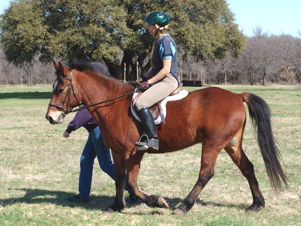
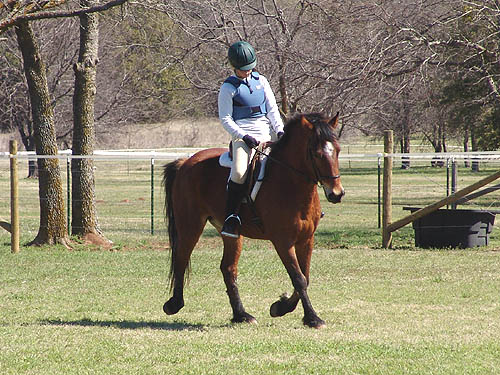

Herbie at the Cross
Country Course I was going to school cross country on
Thuy, so I thought I'd bring
Herbie along and see what he thought.
He was great tied to the trailer
for a couple of hours while I schooled
Thuy, and seemed happy to
be saddled and taken out.
I was bit nervous (always am on a new
horse), so we just walked and trotted
around the cross country course. While
he was there, Lydia, a junior rider,
rode him a little, and Sharon, who went
Training on Sunday, took him over
the GAG cross country course.
No problems, so if everything goes ok,
I should have him entered in the
next schooling HT...
He didn't jig, or act silly.
He just felt excited and happy to be out where all the other horses were
running and jumping around.

He's 14.2, but even at my height
he didn't feel too small.
He went right in the water,
but tried to stop and paw a couple of times...
Sometimes a little hollow or
chomping on the bit. But, he never felt unsafe.
Lydia fits him well.
She must have been more relaxed
than me. He was much better about stretching into the bridle for her.

I think he'll be ready for at
least intro the next time a show comes around. He picks up the canter,
but with all our rain I've only had a chance to play with it once.
Here's Sharon getting ready
to go around the Green as Grass course.
They had no trouble doing the
course cold. At a couple of the jumps we could see a little hesitation,
but when she said jump, he did.
Of course we're talking pretty
small jumps, but some of them weren't typical and he didn't feel the need
to stop and stare.
Good or bad, he didn't jump
really round like my other guys. Not much in the way of over jumping and
the rider looked like she never was popped out of the saddle.
He didn't truly jump all the
jumps. Some he just took as a trot or canter stride.
It's hard to decide if I want to create
more impulsion, considering that lazy isn't always bad for a child's horse.